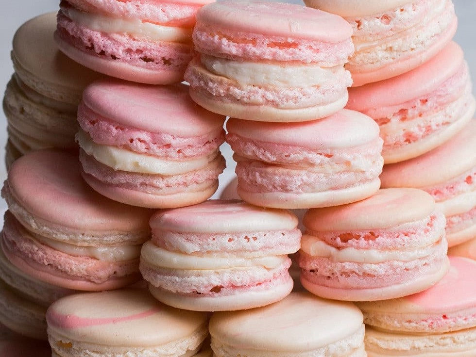
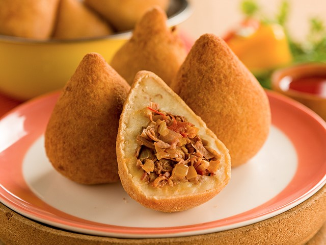

Cardápio
Escolheria para comer comigo a escritora Carolina Maria de Jesus

Caponata
Prato típico da culinária Sicíliana é uma salada de berijela refogada

Canjica
Doce Brasileiro de milho cozido em leite

Temaki
Tipo de sushi enrolado com nori em formato de cone
Tenho vontade de experimentar

Macarons
Pequeno bolo granulado

Mochi
Bolinho feito de arroz glutinoso

Coxinha de jaca
Versão vegana da coxinha tradicional